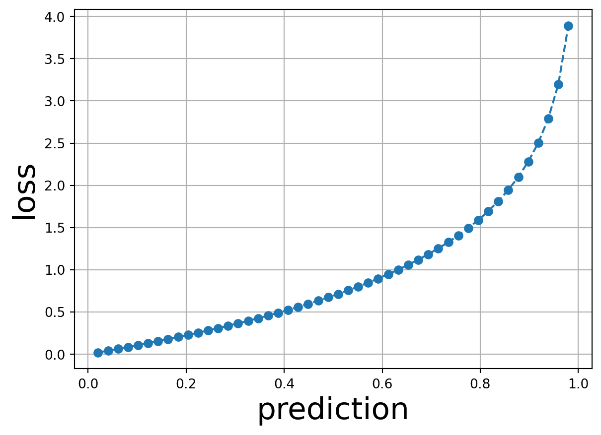
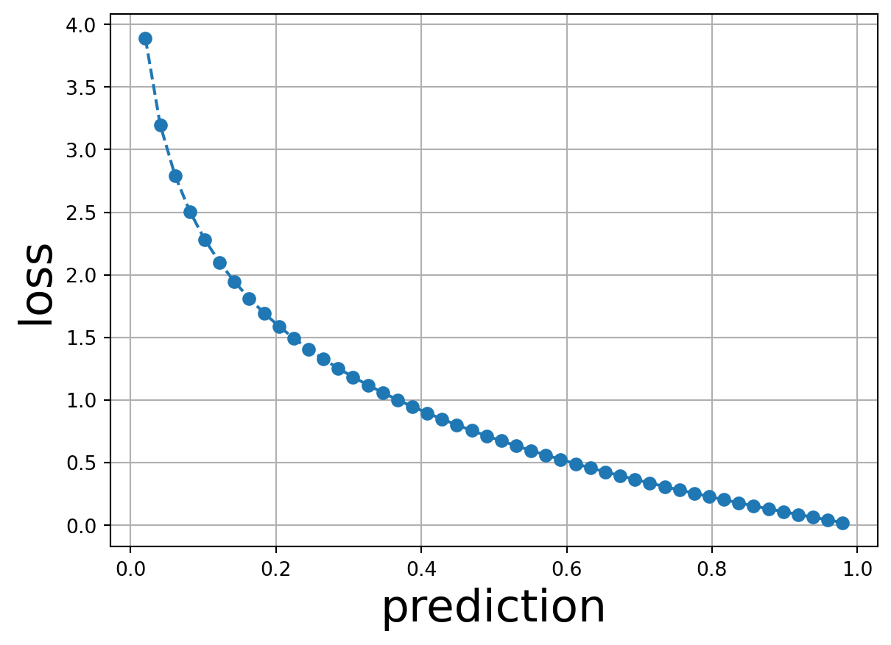

Code
import matplotlib.pyplot as plt
import torch
# Define the BCE function
def bce(y_true, y_pred):
return -1*(y_true*torch.log(y_pred) + (1-y_true)*torch.log(1-y_pred))If you have studied deep learning before, you will notice that we will encounter classification many times. To be honest, it is fun in a way, having your own model to classify anime characters. Alas, it is a bit dry to me. Intelligence, for me, is creativity, the ability to create something new. I want a model that can create, especially work of art. That led me right to GANs, not so much a model but an elegant way of thinking.
For a fuller account, check out the MIT Technology Review article.
Back in 2014, computer vision had witnessed the power of deep learning. One must not look no further than the entries for the ImageNet challenge, with the introduction of very deep models from AlexNet to VGG. (Not to mention ResNet in 2015, an architecture with so interesting an idea that I had to make a project for it.) However, as discerning and mature as these models could get in classification, they were nascent in generating data: results were blurry images or with weird artifact. “Complex statistical analysis of the elements that make up a photograph” was proposed but would not work. We needed a simpler, more elegant way of solving the problem. And the solution arrived in Goodfellow’s seminal paper, Generative Adversarial Nets.

Now I wanted to make two quick detours before going into the inside of GANs:
Note: I will use digital images as examples to describe GANs. A quick introduction: images are stored as matrices of numbers inside computer’s memory. It we are talking about a black and white image, its content could be divided into discrete squares called pixels; each pixel stores a number describing the intensity of light at the pixel, with 0 for black and 255 for white, and numbers in-between for the shades of gray. If we are referring to colored images, we will have three matrices for intensity of red, green, and blue. This means that to generate images, we just need to generate one matrix or three matrices of certain dimensions, which could be displayed to the screen later.
The word “adversarial” in GAN means “involving or characterized by conflict or opposition” according to Oxford Dictionary. Simply put, a GANs’ system consists of, instead of one, two neural networks pitted against each other. The first one is called Generator, its inputs will be some random numbers, and its output will be the matrix or matrices described above. The second one is called Discriminator, (or Critic, which we will meet later), its inputs will be some real images and the generated images, its output will classification of the image it sees (ideally 0 for real images and 1 for generated images). An analogy is we have the real images as a pile of real antique paintings, the Generator as a forger, the generated images as a pile of forged paintings, and the Discriminator as an appraiser trying to discern the two piles.
| Generator | Discriminator | |
|---|---|---|
| Input | Random numbers | Images (real & generated) |
| Output | Images | Class of image (binary) |
| Role | Forger | Appraiser |
Quick detour: the GAN concept advances generative AI the same way backpropagation does so. The approach of trying to know the distribution of the image features was right, but the method was wrong a.k.a too complex and computationally expensive. With GAN, we have an elegant way to start with any random distribution while moving towards the optimal distribution incrementally. No need to know everything any more.
Our loss function will be the good ol’ binary cross-entropy: \[J(\theta) = -\frac{1}{m}*[y^{(i)}log(h(x^{(i)}, \theta)) + (1 - y^{(i)})log(1 - (h(x^{(i)}, \theta)))]\]
That surely looks very intimidating, but one must not let symbols and numbers get in the way of intuition. One just need to know \(y^{(i)}\) is the true label of the ith example (0 or 1), \(h(x^{(i)}, \theta)\) is the predicted label for the ith example with input \(x^{(i)}\) and parameters \(\theta\). With this information, it is easy to realize that the loss will be 0 if the predicted label is the true label and infinitely large otherwise.
import matplotlib.pyplot as plt
import torch
# Define the BCE function
def bce(y_true, y_pred):
return -1*(y_true*torch.log(y_pred) + (1-y_true)*torch.log(1-y_pred))y_true = torch.zeros(50)
y_pred = torch.linspace(0., 1., 50)
plt.figure()
plt.plot(y_pred, bce(y_true, y_pred), "o--")
plt.xlabel("prediction", fontsize=23)
plt.ylabel("loss", fontsize=23)
plt.grid()
plt.show()
y_true = torch.ones(50)
y_pred = torch.linspace(0., 1., 50)
criterion = torch.nn.BCELoss(reduction='none')
plt.figure()
plt.plot(y_pred, bce(y_true, y_pred), "o--")
plt.xlabel("prediction", fontsize=23)
plt.ylabel("loss", fontsize=23)
plt.grid()
plt.show()
I mentioned that this is a conflict between Generator and Discriminator. For Discriminator, it wants to classify correctly i.e. catch the Generator every time while approve the value of the real images. In other words, it wants to minimize its loss function. For Generator, it wants the reverse i.e. pass a fake as a real to the Discriminator every single time. In other words, it wants to maximize the loss function (of the Discriminator). This leads to the ter minimax game that you may hear some people use to describe GAN.
The game can be considered complete when the Discriminator’s accuracy drops to 50% i.e. it can no longer discern, and essentially has to guess at random for each image. At this, our Generator will become potent enough to fool even us with its humans and cats.
As a primer this is far enough. I will continue on the subject, describing each model’s simplest architecture possible, the process of training one, as well as the difficulty in training GANs. (Training a model is hard enough, now we have two.)
All the quoted paper from ArXiv was embedded with its corresponding Ar5iv link for the HTML version instead to support the tool. To change to the abstract page, follow this example: https://ar5iv.labs.arxiv.org/html/1409.1556 → https://arxiv.org/abs/1409.1556.